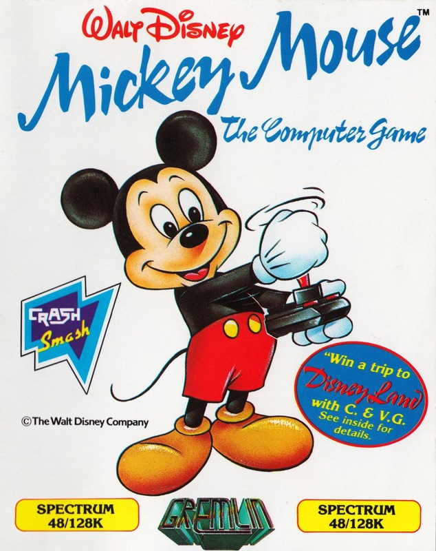
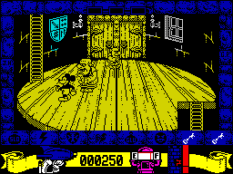
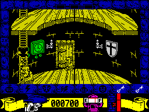
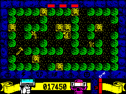

Mickey Mouse


{kind=link}

| Publisher: | Gremlin Graphics |
| Price: | £7.99 cassette, 12.95 disk |
| Year: | 1988 |
| Source: | CRASH, Issue 54 |

Famous the world over for more than 50 years, Mickey Mouse has once again got star billing — but this time in his own computer game. The little rodent with the squeaky voice has got quite a job on his hands: Disney Castle has been taken over by the Ogre King and all his nasty little cohorts.
The castle consists of five towers, each of which is viewed from the side and which scroll past vertically as Mickey climbs ladders from floor to floor.

All five towers are completed to save the castle — a mammoth task for such a little mouse you might think, but Mickey is not unarmed in his brave quest: he carries with him a water pistol and a hammer. Ghosts are killed by shooting with the pistol; ogres by hitting with the hammer. If the water runs out Mickey dies.
When our hero kills a nasty it leaves an object behind: a bottle of water to refill his water pistol, one of various magic spells, or a black bubble which stuns Mickey if it hits him. Occasionally a key is left with which Mickey can open one of the doors in the tower.

heads upwards ever onwards
Each door leads to one of five types of room, containing a further sub-game. One of these is in the shape of a Pac-Man room where Mickey must collect hammer, nails and wood and find the exit to complete the room. Another involves running along a balcony throwing down hammers to burst the rising bubbles while avoiding or bashing approaching ghosts. The remaining rooms include the Donkey Kong room, the Tap and Platform room and the Ogre King’s room.
Having completed a room, Mickey returns to the central tower. When he has completed all the rooms, he can pass through the highest doorway to complete the tower; another tower is then loaded from tape.
In the highest room of the fifth tower lies the Ogre King who throws fireballs at Mickey; only once this demon is defeated can Disney Castle be saved.
CRITICISM

Gremlin’s Mickey Mouse
“Gremlin have managed to make a decent game out of a rather strange licence. The vertical scrolling in the tower is very unusual but is very smooth and effective. Mickey moves well, as do the ghosts and ogres; I particularly like the way a large ogre turns into two small ones when hit with the hammer! The idea of having two different types of weapon to kill either ghosts or ogres is interesting and helps to improve the action in the main tower scene. However, this would soon get tedious if it were not for the five sub-games, which make for huge variety in gameplay. Sound is quite sparse but there’s the odd tunelet between screens. The only problem is that the game is just that bit too easy and the first tower is soon completed. However it’s very playable; one of the best cartoon licences yet.”
PHIL ... 87%
“That cute little figure with big round ears, shiny nose and spindly tail is unmistakably Mickey. Having survived the transformation into machine code with a flourish, everyone’s favourite mouse is charging around the towers and turrets of Disney castle in characteristic cartoon style. Whether he’s bashing ugly monsters with a mallet or squirting them into a liquid pulp, bursting bubbles or collecting glue, he never loses his Hollywood cool. For a mouse, Mickey has plenty to do: with ‘upside down’ space invaders to pin to the floor, spells to cast, ogres to bash and complex mazes to explore (at breathtaking speed), it’s extremely unlikely that he’ll ever get bored. All this against a detailed, smoothly scrolling, castle background complete with flickering candles and heavy oak doors. The only elements missing are a few of Mickey’s friends. With a guest appearance from Minnie, dopey Goofy or Pluto a great game might have been even better. Apart from that, there’s little more a movie star mouse could desire.”
KATI ... 91%
“Mickey Mouse, that legendary cartoon hero, has come to the Spectrum with a hammer in one hand and a water pistol in the other. Gremlin have excellently converted him and all his ghostly enemies and surrounded them with a Disney castle fit for a king. All the characters and backgrounds are detailed and animated well, colour has been used tastefully and the sound is great with a tune at the beginning and spot effects and ditties all through the game. Behind the doors in the castle are little sub-games which range from Donkey Kong to Pac-Man and upside-down Space Invaders so Mickey Mouse is in fact many games packed into one! This game definitely has plenty of lastability and the cute graphics will make it a favourite with young and old alike. Gremlin are on to a real winner with Mickey Mouse.”
NICK ... 91%
COMMENTS
| Joysticks: | Cursor, Kempston, Sinclair |
| Graphics: | Superbly drawn and full of character. Colourful sub-stages |
| Sound: | Buzzy title tune plus spot effects |
| General rating: | Mickey Mouse, star of stage and screen, proves that there can be more behind a cartoon licence than cutesy graphics... |
| Presentation: | 91% |
| Graphics: | 89% |
| Playability: | 91% |
| Addictive qualities: | 89% |
| Overall: | 90% |